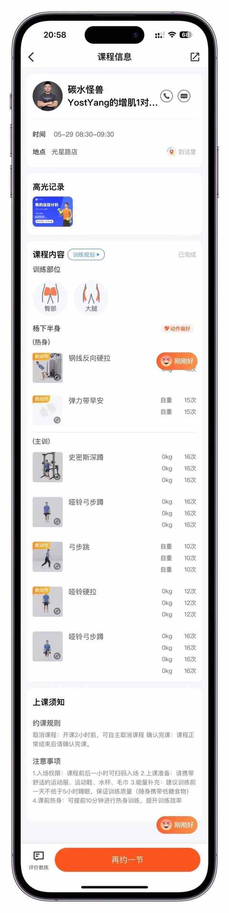
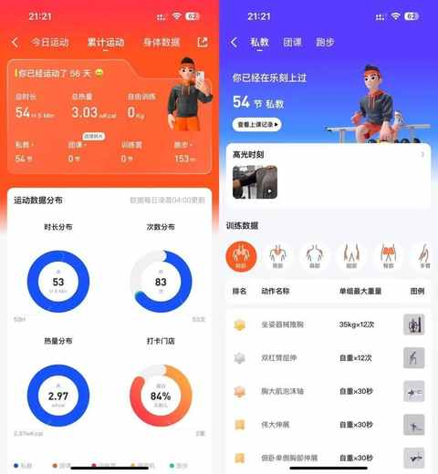
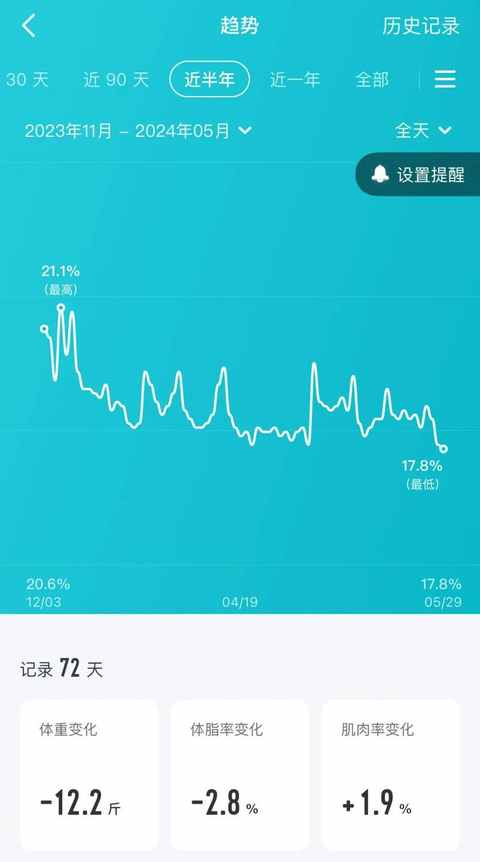
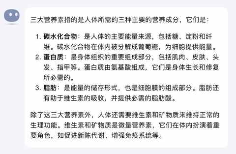
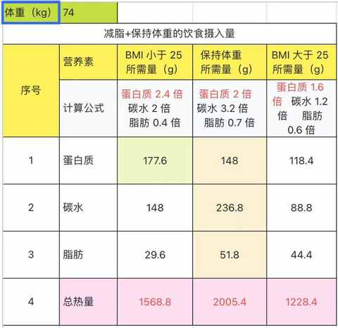
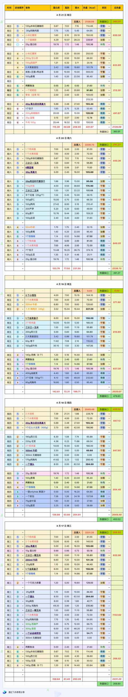

中年健身小白，半年54 次私教课的感受分享
今天主要练的臀腿，现在是每周一、三、五的早上 8 点 30 到 9 点半，把娃送到学校之后直奔健身房：开练！

坚持上课，坚持记录，在数据和身形上都能看到明显的变化。


1. 为什么会找私教？
1）觉察到核心需求变化
从单纯的减脂变为：减脂、增肌、塑形全都要。
2）朋友推荐乐刻健身
去年 10 月份， 正处于瓶颈期，体重虽然有降，但体型并没有多大变化，BMI 也未在正常区间。
某一个工作日，在和朋友聊近期减脂和饮食心得体会的时候，他和我推荐乐刻健身，说那边的跳操团课很棒，超级减脂，而且只要买个月卡就能免费约课跟练。
3）团课时间不匹配
可能因为大学城位于郊区，白天人少，导致团课都在晚上，和我的时间不匹配
4）私教课更适合
首先，时间上能根据自己的时间在 app 上预约
其次，收费相对合理，大约在 200-300 元/课时
第三，有多名教练可供选择
5）这该死的执行力
当天和朋友聊完就去最近的乐刻门店里面看了看，体验之后就约了最近的私教体验课，体验后觉得有人带着练比自己傻练强太多太多。
2. 找私教有哪些好处？
1） 更专业和耐心的指导
虽然当下有各种专业的健身博主每天都在发布内容，可以免费学习，但是和身边有一位专业的健身教练很不一样。
教练会更具需求来制定健身计划，进而依据计划做专业和耐心的指导。
2）更安全的强身健体
自己练不是不可以，但受伤的风险陡增，很多动作的细节多且操作难度不低，如果练习的时候使用了错误的姿势+过重的重量，极有可能会导致受伤。
教练带练的过程中能做好各种辅助，能确保安全。
3）更能练到位
自己练习的时候想做到力竭是挺难的，需要极其强大的意志力，有尝试过但完全做不到，也就是做到适可而止的程度。
3. 练和吃，哪个更重要？
直接说结论：吃比练重要！
网络上比较流行的说法是：三分练七分吃，这句话几乎所有人都知道。
3 分练，7 分吃，剩下 90 分就要靠坚持和正确的练和吃的理念。
前段时间看了《更壮更瘦更强》这本书：
根据书中的内容，计算了当时体重下每天所需的三大营养素的重量。


通过接近两周记录 日常饮食中 发现 3 个之前感受不深入的要点：
① 最容易超量摄取的是： 脂肪
脂肪摄入过多会导致减脂效果越来越差
② 最容易摄取不足的是： 蛋白质
蛋白质持续摄入不足会导致肌肉流失
③ 最容易调整的是： 碳水
米饭减半即可，不可以完全不吃碳水

4. 如果想找私教，要做哪些准备？
1）把健身的时间预留出来
一切的前提都得是有时间，其次才是有意愿
2）选择就近的健身房
把阻力降到最低，离家近离公司近都挺好
3）寻找合适的教练
不同的教练适合不同的学员，可以多问问人，多查查网络上的平均，但比这些功课都更重要的是约 1 次体验课，和意向教练练一次看看
4 ） 持续学习健身方面的知识
看书、关注自媒体博主等等皆可
5 ） 准备合适的鞋服等装备
去一次迪卡侬的线下店，可以一站式搞定所有，国产的安踏和李宁也都有丰富的产品可供选择。
总的来说，见证自己身体变化的过程是很奇妙的，也是一个缓慢的过程，至少对自己而言。
往往自己是最后发现变化的那个人，当身边越来越多的人当面提及你感知并不明显的变化，也就有了更多动力让自己变得更强，从而生活和工作也都越来越好。